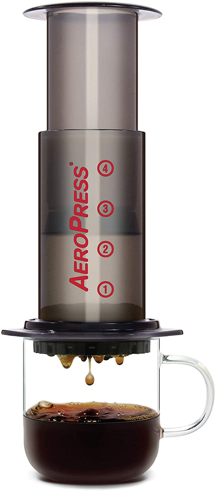
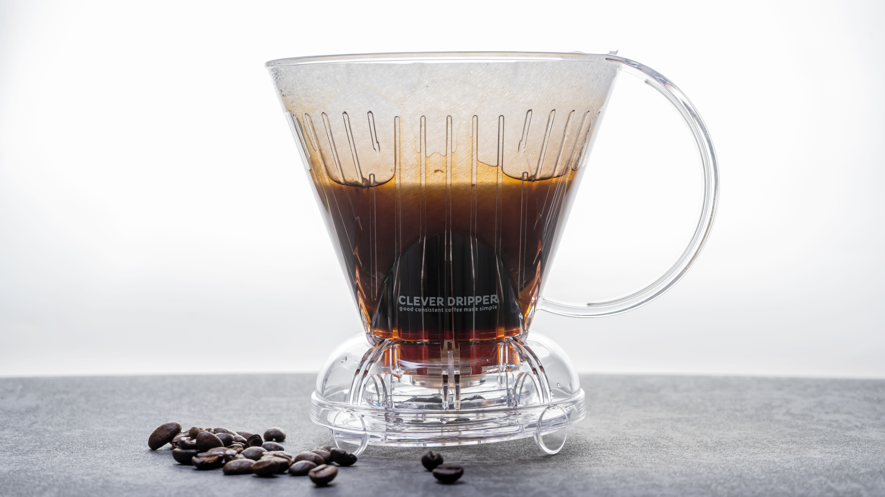

Black as Midnight on a Moonlit Night
Coffee! Either the most bitter beverage that one can imbibe, or the elixir of the gods, mighty curer of sleepiness, and the closest thing that mankind can get to Juice of Sapho from Dune.
Or, y'know, 'bean juice'.
Personally, I've never really liked tea much, which has made me the weird novelty British man in all my international circles, where "how do you like your tea?" comes only shortly after "do you know the Queen?"
Coffee, though, is the business. I would propose that anyone who hates coffee because it's 'too bitter' or something similar can try coffee in a totally different way - namely, with a different recipe. So, below, is an overview of my favourite ways to make a brew.
Aeropress

The Aeropress, aside from sounding like an 80s hovercar and being invented by a 'flying ring' inventor (no, for real - check out their their website) is one of the best ways to make coffee when camping or in a smaller kitchen, and it's incredibly easy besides.
Plus, if you don't like an acidic cup, this is an excellent option - easier on the stomach. And you can make a fake version of espresso too.
Aeropress Recipe
Recipe courtesy of James Hoffmann
- 11g of coffee (ground medium-fine)
- 200g water (fresh from the boil)
- Put your filter into the cap (no need to pre-wet!)
- Add your coffee
- Pour your water in, trying to wet all of the grounds
- Start a timer, and immediately place the piston just into the top of the brewer, to create a vacuum
- Wait 2 minutes
- Swirl the brewer carefully, holding both the brewer and the piston
- Wait 30 seconds
- Press gently all the way through!
Clever Dripper

The clever dripper is a weird hybrid-mode of making coffee, halfway between an immersion method (like a cafetiere) and a drip method (like a pourover). It has a neat little valve on the bottom that only dispenses your coffee once you put it on top of your cup.
Clever Dripper Recipe
Recipe courtesy of European Coffee Trip
- 20g of coffee (ground coarse)
- 300g of water
- Rinse the paper filter with hot water
- Add the coffee
- Pour all your water in one go (no need to bloom!), wetting all the grounds
- Let it steep for about 2 minutes
- Stir gently to break the crust on the top
- Wait until another 2 minutes have passed, and place your dripper on your cup
Cold Brew

Not a gadget this time (although I use one) but cold brew is a great way to enjoy coffee, especially during hot weather, and with a very different flavour profile to normal coffee. It's over 67% less acidic than hot brewed coffee!
Recipe for the Hario Mizudashi coffee pot (what I use at home):
- 115g of medium-fine coffee
- Approx 1000g of water
- Add the coffee directly to the strainer chamber, and pour in your water.
- Put the pot into the fridge.
Now it's up to you - a good starting point is 8 hours of waiting (once it's done, take the grounds out immediately, or you can over-extract over time). If that's too mild for you, keep experimenting with time, grind size, and even the type of beans you use (Hario recommend dark roast, for a stronger flavour).
When it comes to serving it, you can either top it up with cold water and use it as a concentrate, given the strength, or add ice and milk to make a delicious drink.
Also, you can totally do this in a big jar or jug and just strain the coffee out after - but don't do what I did and buy a cheap crap cheesecloth off of Amazon, spilling cold coffee and grounds all over your kitchen counter, and having to individually pick them out of the damned cloth.